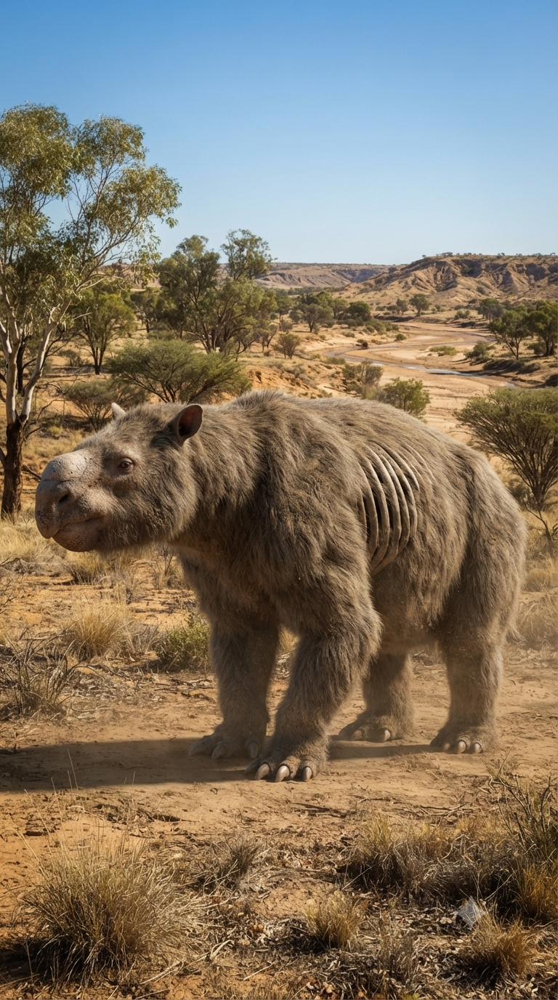
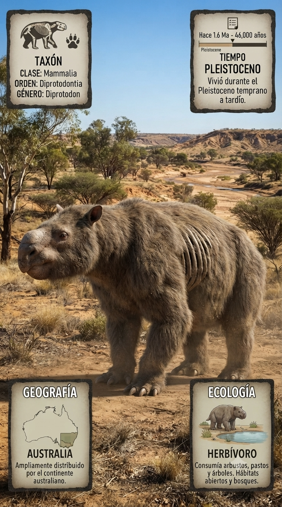
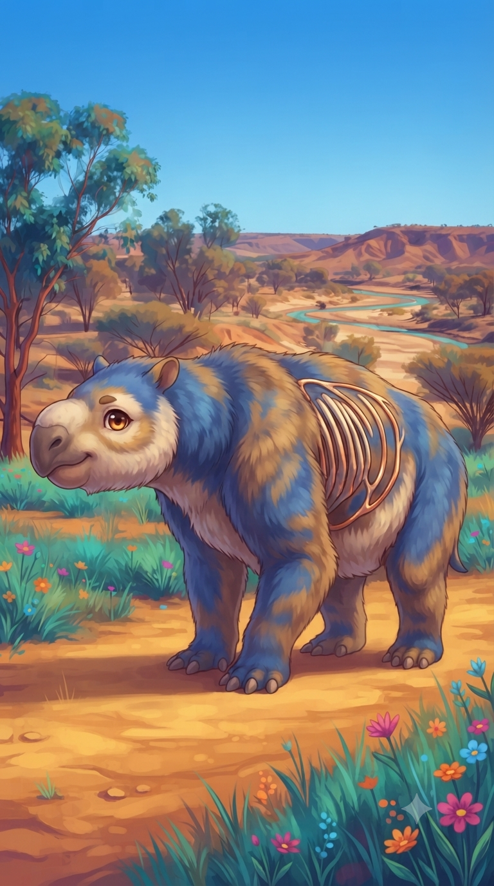
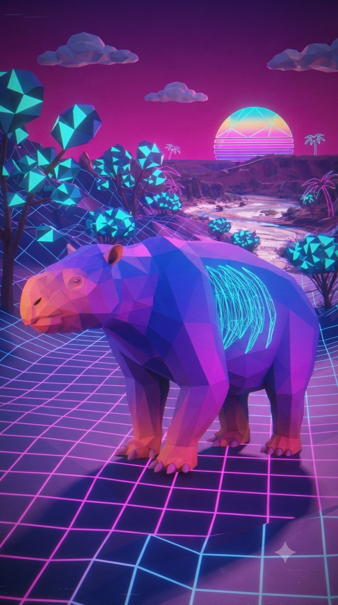

Paleoficha 004_15 de PalEntropía

▶ Haz clic sobre la imagen para ver el Short oficial en YouTube.



TAXÓN: Diprotodon
CLADO: Mammalia (Mamíferos) / Marsupialia / Diprotodontia / Diprotodontidae
DIETA: Herbívoro. Consumía hojas, brotes, arbustos, ramas tiernas y otra vegetación propia de los ecosistemas australianos del Pleistoceno. Su potente dentición estaba adaptada al ramoneo y al procesamiento de grandes cantidades de materia vegetal.
TAMAÑO: Considerado el mayor marsupial conocido. Alcanzaba aproximadamente 3 metros de longitud, cerca de 2 metros de altura en la cruz y un peso estimado entre 2.500 y 2.800 kg, con algunos individuos posiblemente aún mayores.
LOCOMOCIÓN: Terrestre y cuadrúpeda. Sus extremidades robustas soportaban un enorme peso corporal y permitían desplazamientos lentos pero eficientes a través de bosques abiertos, sabanas y llanuras australianas.
TIEMPO: Pleistoceno (aproximadamente entre hace 1,8 millones y 40.000 años).
GEOGRAFÍA: Australia continental, donde ocupó gran parte del territorio en numerosos ambientes y regiones climáticas.
EQUIVALENCIA PALEOGEOGRÁFICA: Habitó una Australia ya aislada del resto de continentes, caracterizada por una fauna única dominada por marsupiales gigantes, reptiles de gran tamaño y aves no voladoras.
AMBIENTE PALEOECOLÓGICO: Bosques abiertos de eucaliptos, sabanas arboladas, praderas, zonas arbustivas y llanuras con abundante vegetación adaptada a un clima variable durante el Pleistoceno.
ECOLOGÍA:
- Fauna secundaria: Procoptodon, Palorchestes, Zygomaturus, Genyornis, Thylacoleo carnifex, Megalania, Quinkana y otros marsupiales, reptiles y aves gigantes característicos de la megafauna australiana del Pleistoceno.
- Nicho ecológico: Megaherbívoro dominante. Actuaba como uno de los principales consumidores de vegetación, modificando el paisaje mediante el ramoneo y contribuyendo a la dinámica de los ecosistemas australianos.
- Relaciones: Compartió hábitat con numerosos marsupiales gigantes y con grandes depredadores como Thylacoleo carnifex. Su desaparición coincide con importantes cambios climáticos del Pleistoceno final y con la llegada de los primeros seres humanos al continente australiano.
ANATOMÍA DESTACADA: Presentaba un cuerpo extremadamente robusto, cabeza voluminosa, extremidades fuertes y una poderosa dentición formada por grandes incisivos característicos de los diprotodontes. Su constitución recuerda superficialmente a la de un enorme wombat, aunque pertenecía a un linaje propio de marsupiales gigantes.
CLIMA: Habitó ambientes sometidos a variaciones climáticas durante los ciclos glaciales e interglaciales del Pleistoceno, alternándose periodos relativamente húmedos con fases más secas y abiertas.
ESTADO ECOLÓGICO: Extinto. Desapareció hace aproximadamente 40.000 años, probablemente como consecuencia de la combinación de cambios ambientales y la expansión de los primeros grupos humanos por Australia.